하중 경로와 제작 조건의 설계
경량화의 질문을 다시 정하기
벨크랭크 플레이트는 푸시로드와 댐퍼 사이에서 하중을 전달하는 부품입니다. 질량을 줄이는 것과 필요한 연결부·하중 경로를 유지하는 일을 함께 검토해야 했습니다. 제가 다룬 문제는 최적화 형상을 얻는 데서 끝나지 않고, 실제 판재 가공과 조립에 사용할 형상으로 바꾸는 것이었습니다.
위상최적화를 판단 자료로 사용하기
Altair Inspire의 결과를 통해 재료가 하중 전달에 기여하는 영역을 살폈습니다. 체결 홀 주변과 연결부를 보존하고, 워터젯과 홀 후가공을 고려해 SolidWorks에서 판재 형상으로 다시 설계했습니다. 자동으로 나온 형상을 그대로 가공한 과정과는 다릅니다.
조건을 함께 설명한 구조 검토
보고서는 Al6061-T6, 3G 등가 정적 하중과 양측 플레이트의 균등 하중 분담을 가정한 구조 검토를 담고 있습니다. ANSYS 결과를 읽을 때는 재료·하중·경계조건이 무엇인지 함께 제시해야 합니다. 해석 수치가 있다는 사실만으로 반복 내구와 모든 실제 동적 조건의 안전성을 확정하지 않습니다.
개인 작업과 제작 파트너
형상 검토·재설계·구조 검토와 제작 협의를 연결했습니다. 외부 제작은 MakeIT가 수행했으며 도면, 수량, 마감 요구와 수령을 소통했습니다. 외주 가공을 제가 직접 장비로 수행한 것으로 표시하지 않습니다. 설계 결과를 전달 가능한 제작 요구사항으로 정리한 점이 이 사례의 한 축입니다.
CAD에서 실측 제작품까지
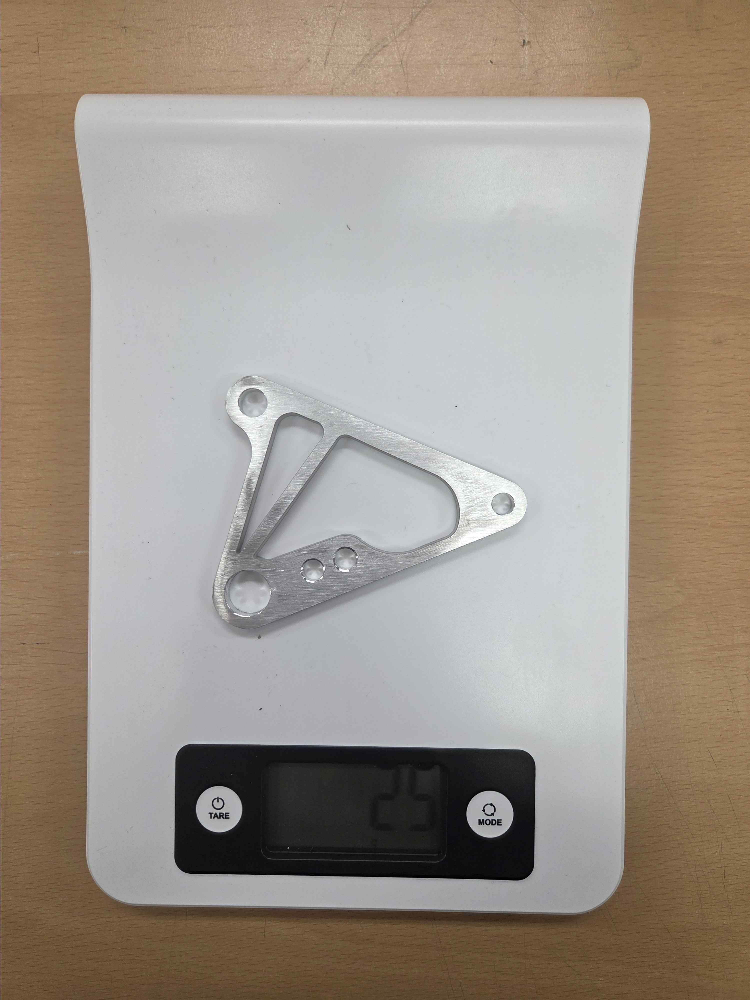
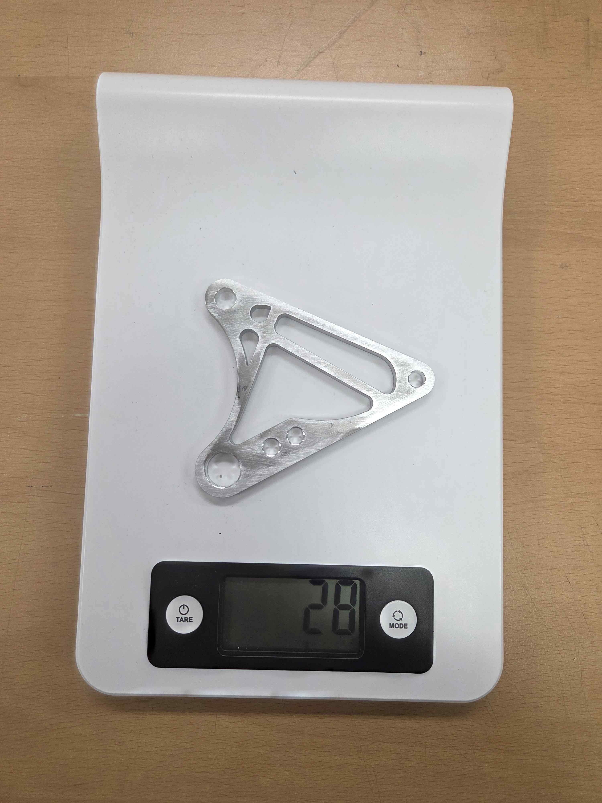
설계 비교의 기준
단일 플레이트의 CAD 질량은 전륜 51.21 → 26.25 g, 후륜 58.13 → 28.27 g입니다. 감소율은 각각 약 48.7%, 51.4%입니다. 같은 기준의 CAD 질량끼리 비교한 값으로, 제작 전후의 실물 부품을 저울로 비교한 비율로 바꾸어 설명하지 않습니다.
실제 결과물이 보여 주는 것
제작품 사진에는 전륜 약 25 g, 후륜 약 28 g이 기록되어 있습니다. CAD 형상, 최적화 검토 이미지, 실제 저울 사진을 순서대로 배치해 설계 판단이 어떤 부품으로 이어졌는지 볼 수 있게 했습니다. CAD 질량과 실측값의 차이를 하나의 수치로 뭉개지 않는 것이 결과 설명의 기준입니다.
현가 제작의 연결 조건
벨크랭크만으로 현가 시스템이 완성되는 것은 아닙니다. 하드포인트를 제작물에 옮기는 지그·체결 구조와 푸시로드 길이 조절 방식도 보고서에 정리했습니다. AEF-25부터 사용한 방식을 유지하면서 5T 철판 지그 고정, 가접, 치수 확인, 본용접의 절차와 좌·우나사 로드엔드 조절을 설명했습니다.
그림의 종류
전·후륜 형상과 지그는 CAD이고, 최적화·구조 그림은 계산 결과입니다. 저울이 보이는 이미지는 실물 제작 결과입니다. 지그 그림을 실물 제작 사진이나 이번 시즌 새로 발명한 지그로 소개하지 않습니다. 세 종류의 자료를 함께 제시하면 설계·계산·제작의 연결을 구체적으로 읽을 수 있습니다.
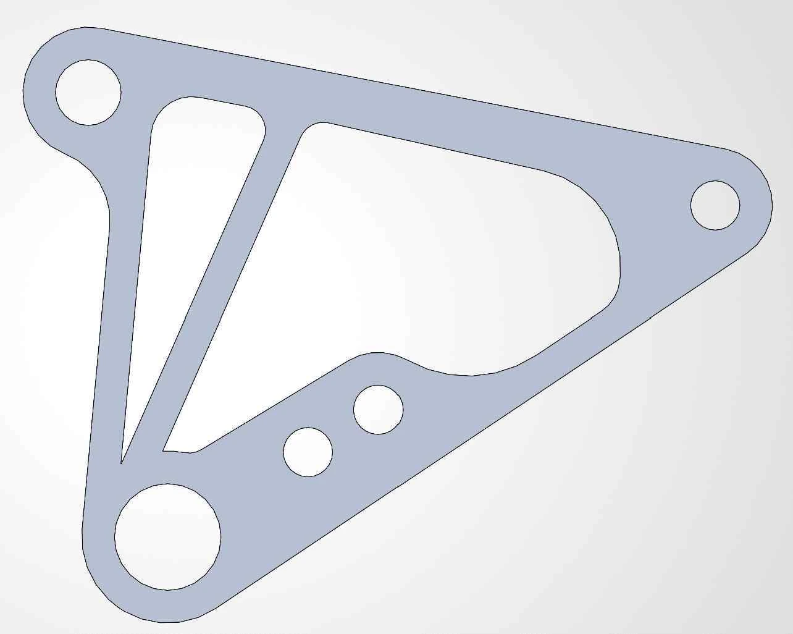
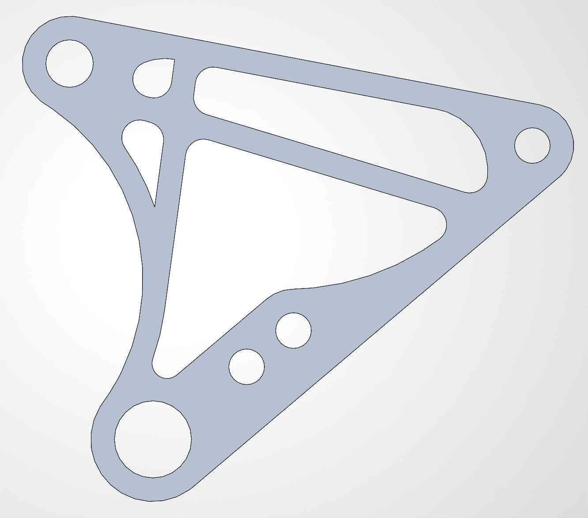
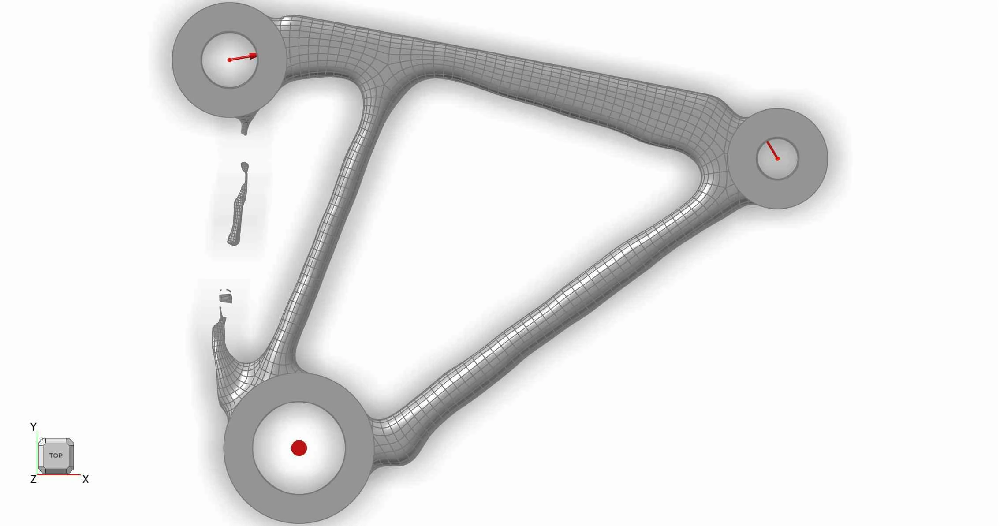
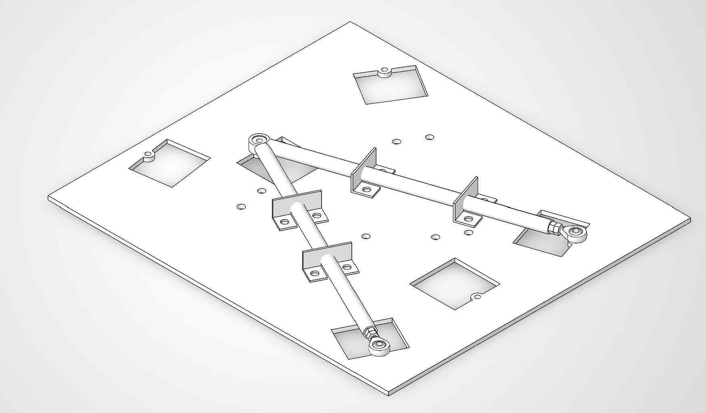
설계보고서 심층 기록: MR·스프링·스트로크: 같은 정의로 연결한 설계 계산
Motion Ratio 정의부터 맞추기
보고서에서 MR은 Damper Travel / Wheel Travel로 정의했습니다. 전륜 0.70은 휠이 1 mm 움직일 때 댐퍼가 0.70 mm 움직인다는 뜻이며, 후륜은 0.80입니다. MR을 역수로 정의하는 자료와 식을 섞으면 스프링과 하중 계산이 뒤집히므로 정의를 먼저 고정했습니다. 이 값은 실제 벨크랭크 회전 구간에서 조금씩 달라지는 순간비를 단순화한 등가 설계 기준값입니다.
AEF-25의 전륜 0.614/후륜 0.543에서 AEF-26의 0.70/0.80으로 목표를 재설정했습니다. 전년도에도 CAD 휠 변위에 따른 댐퍼 변위로 MR을 산정했기 때문에, MR 계산 개념을 처음 도입했다는 성과로 쓰지 않습니다. 변경한 것은 차량 목표와 패키징에 맞춘 기준값과 연결 형상입니다.
목표 Ride Frequency를 실제 스프링으로 변환하기
설계 순서는 목표 고유진동수 f → 휠 기준 강성 K_w → MR → 스프링 강성 K_s입니다. 보고서의 식은 f=(1/2π)√(K_w/m_s), K_w=K_s×MR²입니다. 단위는 K_w를 N/m로 사용할지 N/mm로 사용할지 일관되게 변환해야 합니다. 스프링 강성만 비교하면 같은 스프링이 서로 다른 MR에서 다른 휠 기준 강성을 만든다는 점을 놓치게 됩니다.
보고서 초기안은 휠당 상질량 전륜 61.36 kg, 후륜 75.64 kg, 목표 Ride Frequency 2.49/2.74 Hz를 사용합니다. 그 결과 목표 Wheel Rate는 전륜 15.019 N/mm, 후륜 22.419 N/mm입니다.
K_s,F = 15.019 / 0.70² = 30.651 N/mm ≈ 175.02 lb/in
K_s,R = 22.419 / 0.80² = 35.030 N/mm ≈ 200.02 lb/in
초기 선정은 Hyperco 18FS175/18FS200, 즉 175/200 lb/in입니다. 적용 규격으로 되계산한 Wheel Rate는 15.017/22.416 N/mm로 초기 목표와 근접합니다. 이 수치의 의미는 계산값과 상용 규격의 정합입니다. 실제 제작 스프링의 강성 공차나 차량 중량 오차보다 작은 계산 차이를 특별한 물리적 정밀도 성과로 강조하지 않았습니다.
더 큰 MR이 항상 좋은 것은 아닌 이유
MR이 작으면 같은 Wheel Rate를 구현하기 위해 더 높은 Spring Rate가 필요하고, 댐퍼 유효 변위가 줄어듭니다. 반대로 MR을 크게 하면 요구 스프링 강성을 낮추고 댐퍼를 더 많이 작동시키지만, 스트로크 사용량·벨크랭크 회전각·주변 간섭과 체결부 하중을 함께 확인해야 합니다. 전륜 0.70은 조향계와 프론트 프레임 공간, 후륜 0.80은 구동축 자세와 리어 댐퍼 배치의 조건을 함께 고려한 설계값입니다.
전체 휠 트래블을 댐퍼 사용량으로 바꾸기
| 설계 항목 | 전륜 | 후륜 |
|---|---|---|
| 휠 Rebound / Jounce | 30 / 25 mm | 30 / 30 mm |
| MR | 0.70 | 0.80 |
| 댐퍼 Rebound / Jounce | 21.0 / 17.5 mm | 24.0 / 24.0 mm |
| 총 댐퍼 사용량 | 38.5 mm | 48.0 mm |
| 공칭 댐퍼 스트로크 | 57 mm | 57 mm |
| 공칭 기준 잔여량 | 18.5 mm | 9.0 mm |
후륜은 전륜보다 MR이 커서 같은 휠 변위에서 댐퍼 스트로크를 더 많이 사용합니다. 공칭 잔여량이 9 mm라는 계산은 전체 57 mm 안에 작동 범위가 들어간다는 1차 확인입니다. 정적 설치 위치와 범프 러버, 실제 완전 신장·압축 길이, 제작 오차를 반영한 실차 Bottoming·Top-out 검증을 대신하지 않습니다. 실제 보유 댐퍼가 중고품이므로 조립 전 상태 확인도 별도로 필요합니다.
코일이 완전히 붙는 조건도 확인하기
보고서에서는 스프링 사용 가능 변위와 정적 압축량+설계 Jounce를 비교했습니다. 전륜은 정적 스프링 압축 약 28.1 mm와 추가 압축 17.5 mm를 합한 45.6 mm, 후륜은 26.5+24.0=50.5 mm입니다. 해당 스프링 사용 가능 변위 75.7/74.0 mm와 비교한 초기안입니다. 이는 스프링 Solid Height 검토이고, 댐퍼 자체의 기계적 스트로크 검토와는 다른 문제입니다.
Sag라는 용어도 보고서에서는 정적 차고에서 전체 Wheel Travel 중 Rebound가 차지하는 비율로 정의했습니다. 전륜 30/55=54.5%, 후륜 30/60=50.0%입니다. 일반적인 스프링 정적 압축량과 같은 뜻으로 읽지 않도록 정의를 붙였습니다.
판본과 시험 조건을 섞지 않기
이 175/200 lb/in 설계안은 별도 롤 분석 프로젝트의 전륜 250→300 lb/in, 후륜 300 lb/in 유지 시험과 다릅니다. 초기 설계 계산을 후속 시험의 실제 세팅이라고 쓰거나, 250→300 결과를 초기안의 주행 검증으로 연결하지 않습니다. 또한 제출보고서 p40은 최종 다운포스 미확정으로 공력 하중을 초기 Spring 계산에 직접 반영하지 않았다고 명시합니다. Full Aero를 고려한 설계 의도와, 최종 공력 하중을 포함한 검증 완료는 구분합니다.
벨크랭크 하중 계산의 330 kg·전후 52.3/47.7%와 스프링 계산의 휠당 상질량은 서로 다른 절의 입력입니다. 모든 수치가 하나의 최종 실차 중량모델로 정합되었다고 주장하지 않고, 통합 검증 시 중량·상질량·하중배분의 판본을 맞춰야 할 항목으로 남겼습니다.
근거: 개인 섀시 설계보고서 145~158, 194, 196, 233~234쪽; A-FA 팀 제출 설계보고서 38~42, 51~52쪽.

설계보고서 심층 기록: 벨크랭크: 하중 경로를 유지한 경량화와 제작 가능한 재설계
세 체결점을 실제 부품으로 연결하기
벨크랭크는 푸시로드의 힘을 댐퍼 방향으로 바꾸면서 휠 변위와 댐퍼 변위의 관계를 결정합니다. 따라서 외형을 줄이는 문제보다 먼저 피벗·푸시로드 연결점·댐퍼 연결점의 상대 위치를 정해야 했습니다. 목표 MR, 댐퍼 스트로크, 로드엔드 작동각, 피벗 반력과 주변 패키징이 연결되어 있습니다.
전륜은 푸시로드 측 기준 레버암 78 mm, 댐퍼 측 55 mm, 후륜은 81/65 mm로 구성했습니다. 이 값은 피벗에서 연결점까지 거리와 작용선의 각도를 함께 검토한 기준입니다. 실제 작동 중 유효 모멘트암은 각도에 따라 달라질 수 있으므로, 단순 길이비 하나가 전체 트래블의 순간 MR과 항상 같다고 설명하지 않습니다.
후륜 푸시로드의 장착 위치를 어퍼암에서 로어암 보강대로 변경하면서 푸시로드 입력 방향도 바뀌었습니다. 전륜 형상을 그대로 복사하거나 전년도 외곽만 줄이는 대신, 후륜 프레임 상부 댐퍼와 로어암 입력 방향에 맞춘 별도 형상 검토가 필요했습니다.
자유물체도와 하중 산정의 연결
보고서 하중 계산은 드라이버 포함 질량 330 kg, 전후 배분 52.3/47.7%, 중력가속도 9.81 m/s²를 사용했습니다. 1륜 정적 하중 전륜 846.6 N/후륜 772.1 N에 3G 등가 배수를 적용해 휠 하중 2539.7/2316.3 N을 얻었습니다. 이 3G는 단품 구조 검토용 등가 조건이며 모든 범프·제동·코너링의 동적 조합을 실측한 포락선이 아닙니다.
MR=댐퍼 변위/휠 변위이므로 등가 댐퍼 하중은 F_shock=F_wheel/MR입니다. 계산값은 전륜 3628.1 N, 후륜 2895.4 N입니다. 정적 자세에서 작용선이 레버암과 수직이라는 가정으로 피벗 모멘트 평형을 적용했습니다.
F_pushrod × l_pushrod = F_shock × l_shock
계산한 전체 푸시로드 축하중은 전륜 2558.3 N, 후륜 2323.4 N입니다. 이 하중은 뒤의 푸시로드 좌굴 검토와 연결됩니다. 실제 부품은 양측 2장 플레이트와 스페이서로 구성되므로, 단일 플레이트 해석에서는 균등 분담을 가정해 전체 하중의 절반을 적용했습니다.
| 항목 | 전륜 | 후륜 |
|---|---|---|
| 전체 댐퍼 하중 | 3628.1 N | 2895.4 N |
| 전체 푸시로드 하중 | 2558.3 N | 2323.4 N |
| 산정표의 단일 판 댐퍼 하중 | 약 1814 N | 약 1448 N |
| 산정표의 단일 판 푸시로드 하중 | 약 1279 N | 약 1162 N |
개인 원고의 해석 조건 절에는 전륜 푸시로드/댐퍼 1279.7/1813.3 N, 후륜 1161.2/1447.4 N이 기재되어 있습니다. 산정 절의 반올림 표와 소폭 다르므로, 이를 완전히 동일한 입력이라고 덮지 않습니다. 공개 설명에서는 대표 하중 수준과 가정을 제시하고, 정밀 재현 시에는 해석 원본의 실제 입력을 확인할 항목으로 남깁니다.
토폴로지 결과를 그대로 만들지 않은 이유
먼저 세 체결부를 잇는 보수적인 일반 판 형상을 만들었습니다. 체결 홀 주변과 베어링 삽입부는 유지해야 하는 영역으로 두고, 나머지 판에서 제거 가능한 재료를 Altair Inspire로 검토했습니다. 결과에서 피벗과 두 체결부를 잇는 외곽 하중 경로, 홀 주변 환형 영역을 확인했습니다. 중앙부와 일부 내부가 경량화 포켓의 후보가 되었습니다.
최적화 결과에는 유기적인 곡선과 얇은 연결부가 나타날 수 있습니다. 실제 제작은 워터젯과 홀 후가공을 사용하는 2차원 판재 방식이므로, 최적화 출력이 최종 제조 도면이 될 수는 없었습니다. 주요 하중 경로를 남기면서 포켓을 정리하고, 홀 주변 여유·최소 코너 반경·공구 접근·디버링·베어링 압입 영역을 함께 고려해 재설계했습니다. 외부 가공은 MakeIT가 수행했고, 저는 도면·수량·마감 조건 전달과 제작품 수령·검토를 연결했습니다.
CAD 감량과 실물 질량을 구분하기
단일 플레이트 CAD 전륜은 51.21→26.25 g, 후륜은 58.13→28.27 g입니다. CAD 감량률은 전륜 48.7%, 후륜 51.4%입니다. 보고서의 저울 사진은 실제 제작품 전륜 25 g, 후륜 28 g을 보여줍니다. 경량화 전 실물의 질량을 측정해 전후 비교한 자료는 아니므로, 실제 저울 감량률이라고 쓰지 않습니다. 이 사진은 출력 결과가 실제 가공품으로 이어졌다는 점과 제작품 질량을 보여주는 근거입니다.
회전 구조와 해석 조건
피벗에는 686ZZ 베어링(내경 6 mm, 외경 13 mm, 폭 5 mm)을 적용했습니다. 외륜은 판에 압입하고 내륜은 피벗 볼트·스페이서로 지지하여 체결력이 회전을 방해하지 않도록 하는 구조입니다. 두 판이 같은 하중을 나누려면 스페이서 길이와 로드엔드 위치, 조립 상태가 대칭에 가깝게 유지되어야 합니다. 베어링 외륜 압입량이 과하면 회전 저항과 변형 문제가 생길 수 있어 홀 후가공과 조립 상태가 중요합니다.
최종 Al6061-T6 단일 플레이트를 ANSYS Static Structural로 검토하고 피벗 베어링 삽입부를 Fixed Support로 단순화했습니다. 전륜 최대 등가응력 약 166.9 MPa/최소 안전율 1.5528, 후륜 169.6 MPa/1.5282가 보고서 결과입니다. 좁아진 웹과 포켓 주변에서 응력이 크게 나타나, 재료 제거와 하중 경로 검토를 다시 연결할 수 있었습니다.
이 결과는 설정한 3G 등가 정적 조건에서 항복에 대한 1차 검토입니다. 반복 피로, 충격, 볼트 프리로드, 접촉·압입, 실제 하중 분담 불균형까지 검증한 것은 아닙니다. 제작 후 확인할 항목은 피벗 회전, 베어링 압입 상태, 체결 유격·볼트 풀림, 전 트래블 간섭입니다. 설계·최적화·제작성·정적해석·실물이라는 연결을 남기되 각 근거가 답하는 범위를 분명히 했습니다.
근거: 개인 섀시 설계보고서 188~194, 196~197, 200~213쪽; A-FA 팀 제출 설계보고서 50~58쪽.
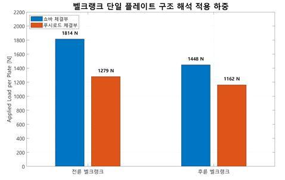
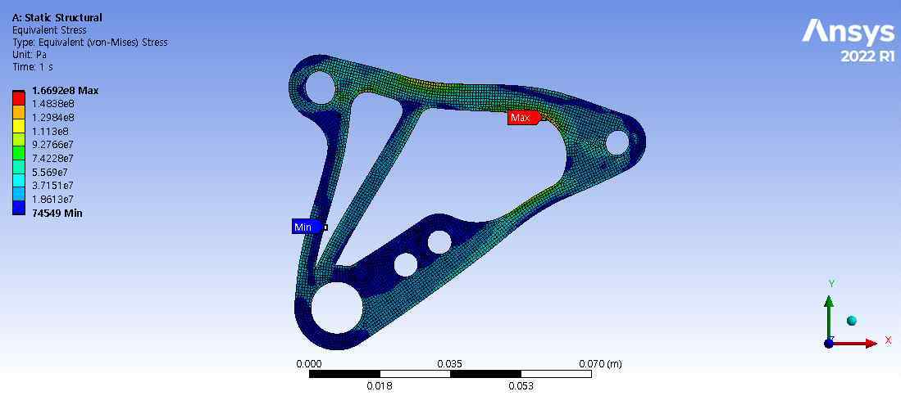
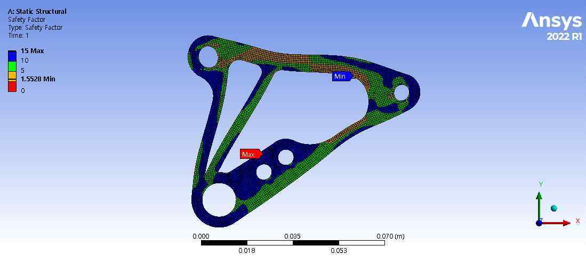
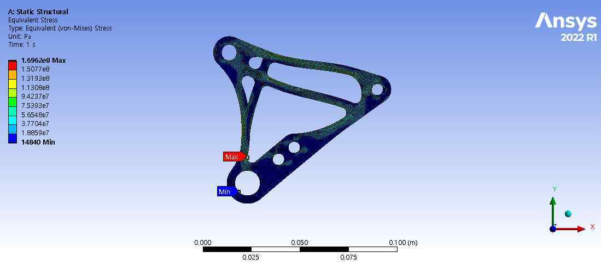
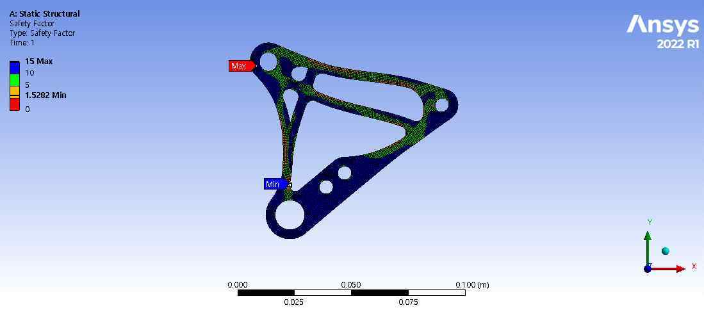
설계보고서 심층 기록: 푸시로드·제작 지그: 좌굴 계산과 하드포인트 재현성
압축 부재와 조정 가능한 링크를 함께 설계하기
푸시로드는 휠의 수직 운동을 벨크랭크로 전달하는 압축 부재입니다. 본체를 외경 14 mm, 두께 1.7 mm, 내경 10.6 mm의 STKM-11A 파이프로 구성하고 양끝에 용접너트를 삽입해 로드엔드 체결부를 만들었습니다. 얇은 파이프 자체에 직접 나사를 내는 대신 별도 너트를 사용하여 나사 체결 길이를 확보하는 구조입니다.
전륜 ITOI는 484.86 mm, 후륜은 328.87 mm입니다. ITOI는 파이프 절단 길이가 아니라 양쪽 로드엔드 베어링 중심 간 거리입니다. 전륜은 프레임·벨크랭크 패키징상 더 긴 부재가 되므로 같은 단면이라도 좌굴 조건이 더 불리합니다.
양단은 우나사·좌나사 로드엔드를 조합했습니다. 장착 상태에서 푸시로드 본체를 회전시켜 전체 길이를 바꿀 수 있어 차고·코너 웨이트·벨크랭크 초기각 조정에 활용할 수 있습니다. 조절 기능이 있다는 것과 모든 조정 범위에서 충분한 나사 체결 깊이가 확보된다는 것은 다르므로, 제작 후 검수에 체결 깊이와 조정 가능 범위를 포함했습니다.
벨크랭크 단일 판과 다른 하중을 쓰기
푸시로드에는 전체 축방향 하중이 흐릅니다. 두 장 플레이트가 나눠 받는 벨크랭크 해석과 달리, 좌굴 계산에서는 하중을 절반으로 줄이지 않았습니다. 적용값은 전륜 2558.3 N, 후륜 2323.4 N입니다.
중공 원형 단면의 2차 모멘트는 I=π(D⁴-d⁴)/64로 계산했으며 약 1266.0 mm⁴입니다. 로드엔드 양단을 핀 지지로 가정해 유효길이계수 K=1.0, 이 절의 탄성계수 E=205,000 MPa를 적용했습니다. 실제 파이프보다 긴 ITOI 전체 길이를 적용한 것은 이상적 파이프 계산에서 길이를 짧게 잡지 않기 위한 가정입니다. 끝단 용접너트와 나사부가 포함된 조립체의 모든 국부 거동을 동시에 모델링한 것은 아닙니다.
P_cr = π²EI / (KL)²
| 좌굴 계산 항목 | 전륜 | 후륜 |
|---|---|---|
| 적용 길이 L | 484.86 mm | 328.87 mm |
| 적용 압축하중 | 2558.3 N | 2323.4 N |
| Euler 임계하중 | 10895.9 N | 23683.6 N |
| 계산 안전율 | 4.26 | 10.19 |
| 보고서 축압축응력 | 38.9 MPa | 35.4 MPa |
같은 단면·재료에서 길이가 길어지면 임계좌굴하중이 길이의 제곱에 반비례해 감소합니다. 후륜의 안전율이 더 큰 이유를 단순히 하중이 조금 작아서라고 설명하지 않고 길이 차이와 연결했습니다. 이 값은 Euler 이상 좌굴 계산 결과이며 실제 푸시로드의 압축 파괴시험이나 용접부 내구시험 결과가 아닙니다.
프레임 절은 E=200,000 MPa, 푸시로드 절은 205,000 MPa를 사용합니다. 서로 다른 절의 가정을 하나로 정리했다고 주장하지 않습니다. 보고서의 축압축응력과 최소 인장강도 비교도 압축 항복·용접부·나사산의 검증을 대신하지 않습니다. 통합 재검토에서는 재료 성적과 허용 기준, 초기 휨, 편심, 국부 단면 변화를 함께 확인할 필요가 있습니다.
연결부의 하중 용량과 작동각
현가 암 인보드에는 THK NOS 6T 로드엔드, 아웃보드에는 JET 6 스페리컬 베어링을 적용했습니다. 보고서 NOS 6T 정적 허용하중 4900 N과 전체 푸시로드 하중을 비교한 비는 전륜 약 1.92, 후륜 약 2.11입니다. 이는 보고서의 정적 허용하중 기준 비교이며 실제 로드엔드 피로수명이나 전체 현가 암 하중 해석의 대체값이 아닙니다.
링크가 범프·리바운드·조향에서 움직일 때 각도 여유가 부족하면 의도하지 않은 측하중과 구속이 생깁니다. 그래서 부품 번호와 하중 용량뿐 아니라 허용 작동각, 스페이서, 로드엔드와 주변 부품 간 간섭을 함께 다뤘습니다.
지그가 기구학과 제작을 연결하는 방식
CAD에서 정의한 하드포인트를 실제 암에 옮기기 위해 5T 철판 지그를 사용한 제작 절차를 보고서에 정리했습니다. 인보드 로드엔드 위치와 아웃보드 베어링 하우징을 기준으로 고정구를 배치하고, 절단한 파이프·보강대를 고정한 뒤 가접→치수 확인→본용접 순서로 진행하는 방식입니다. 용접 열에 의한 위치 틀어짐을 줄이고 좌우 반복 제작의 기준을 유지하는 것이 목적입니다.
제작 후에는 하드포인트 위치와 좌우 대칭, 베어링 삽입, 로드엔드 체결, 용접부 외관, 전 트래블 간섭을 확인할 항목으로 관리했습니다. 푸시로드는 ITOI, 직진성, 용접너트 동축도, 나사 체결 깊이와 조정 범위를 구분했습니다. 제작 절차와 검수 항목이 있다는 이유만으로 실제 위치 오차 분포·공차 합격률·용접 강도 수치를 만들어 내지 않습니다.
현가 방식, 암 제작 지그, 인보드 로드엔드/아웃보드 스페리컬 베어링 구조는 AEF-25에서 유지한 것입니다. AEF-26의 주요 변경은 MR 재설정, 후륜 푸시로드의 로어암 보강대 장착, 보유 댐퍼 실측 데이터 반영, 푸시로드 좌굴 계산 보완, 토폴로지 기반 벨크랭크 재설계입니다. 기존 방식을 새로 발명했다고 쓰기보다, 유지할 구조와 보완할 검증을 구분한 사례로 정리합니다.
근거: 개인 섀시 설계보고서 197, 214~216, 218~229, 233~234쪽.
검증 범위와 제작에서 배운 점
경량화 결과를 읽는 방법
이번 사례의 분명한 결과는 제작 가능한 형상으로 수정한 CAD와 실제 제작품입니다. 질량 감소 수치는 설계 비교값으로 제시하고, 실물 무게는 별도의 측정 기록으로 제시했습니다. 설계 목표가 제작물의 확인 가능한 특성으로 이어졌다는 점에 의미가 있습니다.
구조 검토의 범위
보고서에 기록된 전륜 최대응력은 166.9 MPa·안전계수 1.5528, 후륜은 169.6 MPa·안전계수 1.5282입니다. 이는 제시된 가정에서의 정적 해석 결과입니다. 피로 수명, 볼트·베어링 전체 조합의 장기 내구나 실제 3G 반복 시험의 결과로 확대하지 않습니다.
제작에서 확인해야 할 다음 항목
형상을 설명하는 일과 제작품의 품질을 확인하는 일은 이어져야 합니다. 후속 검증에서는 홀·체결부 치수, 조립 간섭과 실제 하중 조건의 기록을 함께 축적할 필요가 있습니다. 현재 자료에는 전체 부품의 위치 오차 분포·공차 합격률·피로시험 결과가 없으므로 해당 성과를 새로 적지 않았습니다.
남긴 실무 역량
최적화 결과를 해석하고, 제작 방식에 맞춰 형상을 수정하며, 도면과 요구사항으로 외부 가공을 협의하는 흐름을 경험했습니다. 가벼운 부품의 이미지 하나보다 “어디를 유지했고 왜 형상을 바꾸었는지”를 설명할 수 있게 된 것이 중요한 학습입니다. 지그와 체결 절차의 기록도 다음 설계자가 같은 맥락을 이어받는 자료가 됩니다.
기록의 근거
근거: 본인 작성 섀시 설계보고서 200~204쪽(벨크랭크), 218~219쪽(길이 조절 구조), 225~227·234쪽(지그와 기존 제작 방식). CAD 비교와 제작품 무게는 203·204쪽이며, 이미지는 같은 보고서에서 가져왔습니다.
2026-10-20 기준. 개인 담당과 팀 기여, 해석·계획과 실측·완료 결과를 구분했습니다.